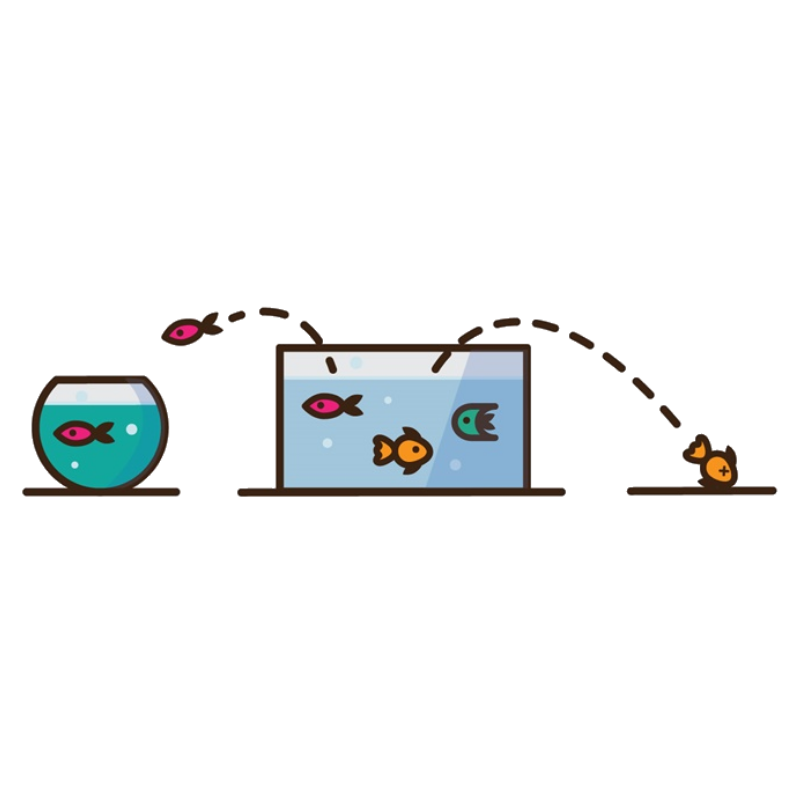

Portfólio
Confira alguns dos meus projetos
Agora que já sabe um pouco sobre mim, gostaria de apresentar alguns dos projetos nos quais trabalhei. Por favor, sinta-se livre para analisá-los e caso tenha alguma dúvida, sugestão ou apenas queira trocar uma ideia sobre algum deles, não hesite em entrar em contato comigo!
Projeto de Ciência de Dados

Customer Churn in Telecom Operators
Big Data Analytics & Machine Learning
Customer Churn in Telecom Operators
Neste projeto utilizamos a linguagem Python para criar um modelo de machine learning que possa prever se um cliente pode ou não cancelar seu plano, e qual a probabilidade disso ocorrer.
Big Data Analytics & Machine Learning


Santander Customer Satisfaction
Neste projeto utilizamos a linguagem Python para criar um modelo de machine learning que possa prever se um cliente está ou não satisfeito com sua experiência bancária.
Big Data Analytics & Machine Learning